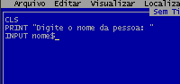
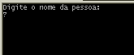
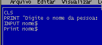
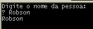
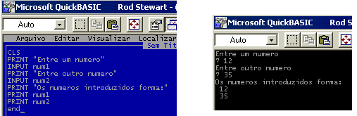

Estudando o Qbasic
Aula 2
Na aula anterior aprendemos como exibir mensagens no vídeo, esta operação é um exemplo de saída de dados, agora iremos aprender como introduzir dados via teclado. Ensinar a etapa de saída antes da etapa de entrada pode parecer uma inconsistência, porém, introduzir dados sem o uso de recursos visuais é sempre um fator de complicação.
O comando INPUT, significa "introduzir", é utilizado para a introdução de dados via teclado.
O processo de entrada de dados é um pouco mais complicado que o processo de saída, pois temos que definir o tipo de dado a ser introduzido: caracteres em geral, somente números inteiros, números com precisão simples etc. e ainda teremos que informar como esse dado será identificado na memória do computador.
Dados tipo String:
São os dados alfanuméricos; podem envolver letras, números e alguns símbolos. Por exemplo: nomes de pessoas, endereços, número de placas de veículos.
Dados numéricos de Precisão Simples:
São números em ponto flutuante que podem possuir até 8 casas decimais. Eles alcançam boa faixa dos números do cotidiano.
Uma abordagem melhor deste assunto pode ser encontrado no curso de lógica de programação, em www.pmfi.hpg.com.br .
De maneira prática, você irá criar "rótulos" para que o computador identifique em que local da memória RAM foi armazenada a informação introduzida.
Para nosso uso inicial você deverá saber o seguinte:
Variáveis Alfanuméricas(String): São identificadas pelo símbolo $, que deverá aparecer obrigatoriamente no final do nome da variável. Exemplos: nome$, rua$, placa$.
Variáveis de Precisão Simples: Poderá possuir o identificador "!" no seu final, porém não é obrigatório, pois o Qbasic assume automaticamente este formato. Exemplos: num, cod, n1 ou alternativamente num!, cod!, n1! .
Em qualquer caso, o nome de uma variável deve começar obrigatoriamente com uma letra.
Vamos "ensinar" o computador a solicitar o nome de uma pessoa. Este processo constitui-se de duas etapas: A saída de dados(mensagem a ser mostrada ao usuário) e a entrada de dados(dado solicitado ao usuário).
Primeiramente o computador deverá mostrar no vídeo uma mensagem do tipo: "Digite o nome da pessoa: ", já vimos que isto pode ser feito com o uso do comando PRINT:
Print "Digite o nome da pessoa: "
Agora o computador deverá aguardar a entrada da informação; isto é feito com o uso do comando INPUT:
Input nome$
Nota: o símbolo $, indica que a variável é do tipo alfanumérico(String).

Tecle shift + F5 para executar o programa. Surgirá a tela abaixo.

A interrogação abaixo da mensagem indica que o comando INPUT está esperando que algo seja digitado. Digite um nome e tecle ENTER.
A execução será encerrada. Pode parecer que nada aconteceu, mas a informação digitada foi armazenada na memória RAM com o rótulo nome$. Verifiquemos isto.
Após o comando: Input nome$ , introduza a seguinte linha de comando:
Print nome$

Tecle Shift + F5, para executar o programa, e repita o procedimento anterior. Desta vez o resultado será:

Observe que a linha: Print nome$ é responsável pela exibição do dado digitado.
Conclusão: toda vez que você precisar utilizar o dado introduzido, basta referir-se ao à variável utilizada para ele, por isto dados diferentes deverão ter nomes diferentes para as suas variáveis, caso contrário a informação mais recente irá substituir a mais antiga.
O processo é similar, a diferença esta no nome da variáveis, como iremos introduzir números então as variáveis serão numéricas, logo não poderemos utilizar o símbolo $ no seu final. Por enquanto nos limitaremos as variáveis de precisão simples o que dispensará a identificação pelo símbolo "!".
Programa exemplo para a introdução de números:
Cls
Print "Entre um numero "
Input num1
Print "Entre outro numero"
Input num2
Print "Os numeros introduzidos foram:"
Print num1
Print num2
end
Digite o programa acima e o execute. Acompanhe sua execução pela listagem acima. Você observará que para cada INPUT haverá uma espera até que o dado solicitado seja introduzido e em seguida teclado o ENTER. Os valores introduzidos são armazenados nas variáveis num1 e num2 e exibidos ao final com o uso do comando PRINT, observe ainda o uso da instrução END indicando o final do programa, este é um bom hábito de programação, pois haverão situações que a sua ausência poderá interferir no funcionamento correto do programa.
